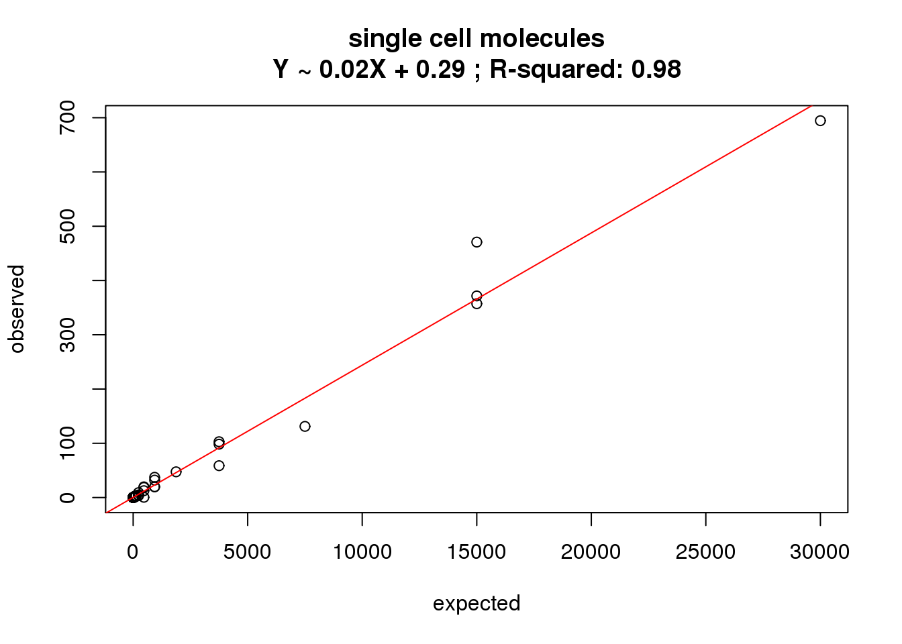
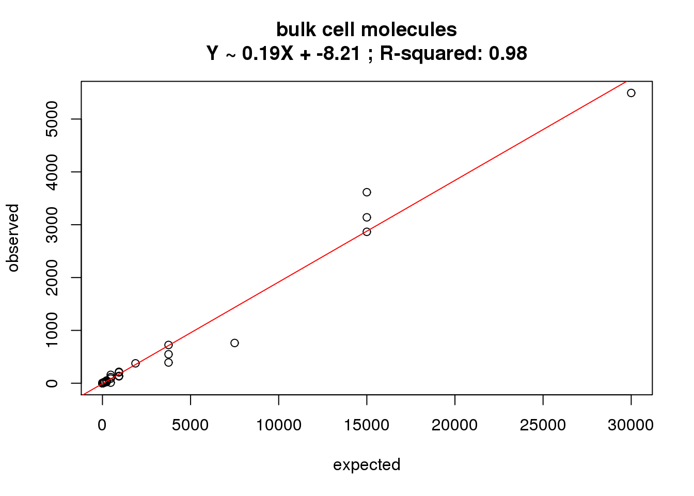
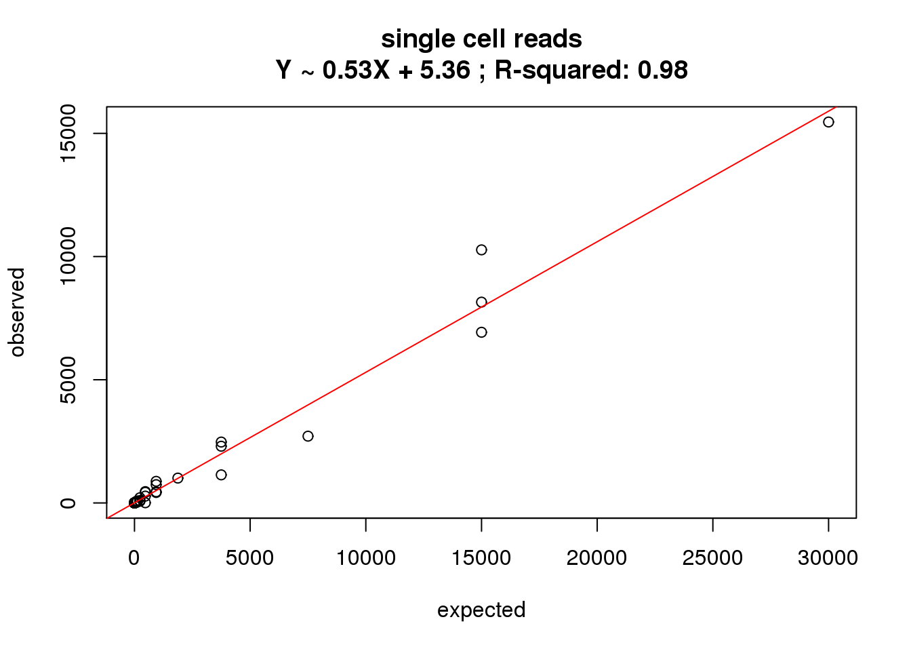
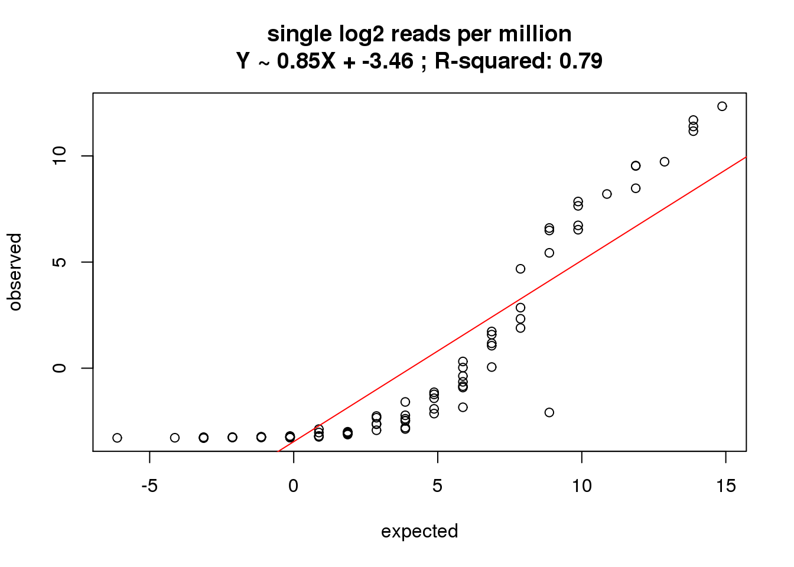
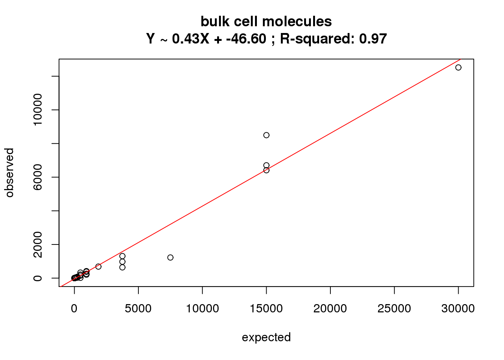
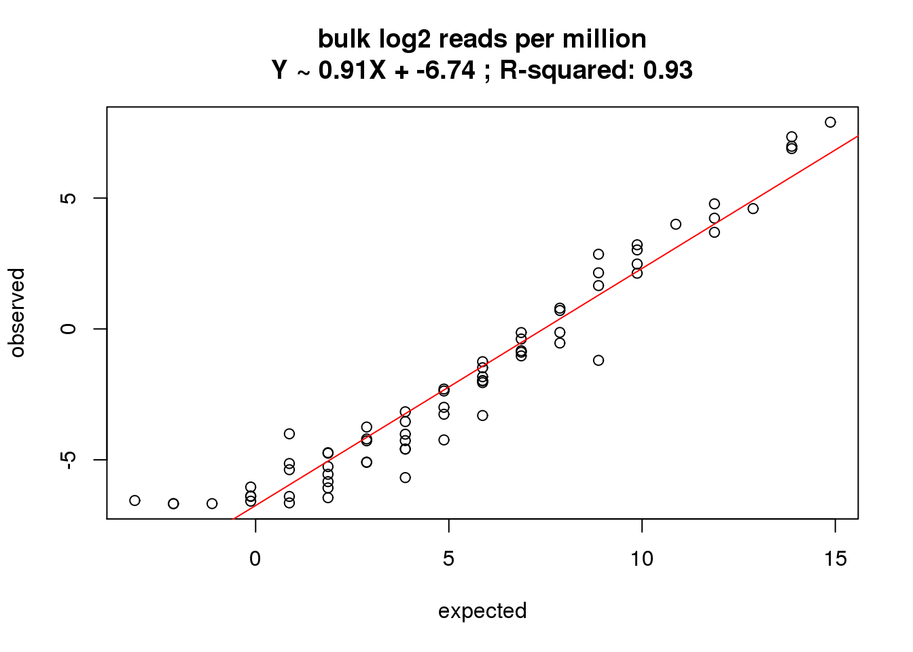
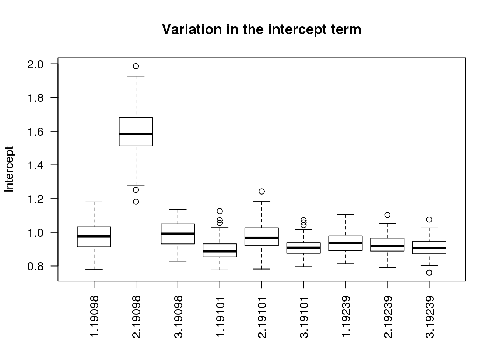
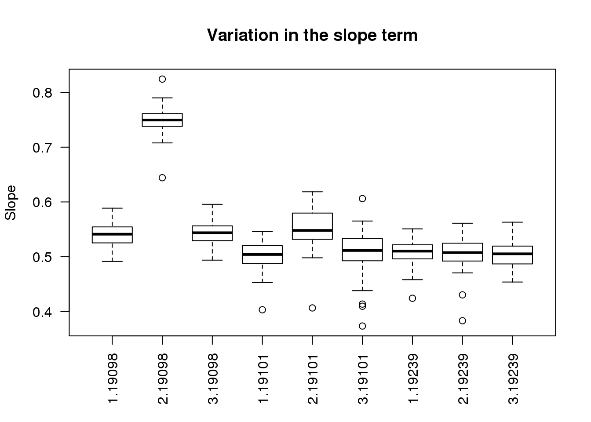

ERCC correlation
2015-06-15
Last updated: 2015-06-30
Code version: bbd04becabb24228433a9d432c2f4d9dd5976bf1
In this analysis:
- Investigate the fit between the observed ERCC data and the expected concentrations
- Investigate how the ERCC fit varies across individuals and batches
- Identify 19098 batch 2 as a clear outlier
Input
library("edgeR")
library("ggplot2")
theme_set(theme_bw(base_size = 16))
source("functions.R")Input annotation.
anno <- read.table("../data/annotation.txt", header = TRUE,
stringsAsFactors = FALSE)
head(anno) individual batch well sample_id
1 19098 1 A01 NA19098.1.A01
2 19098 1 A02 NA19098.1.A02
3 19098 1 A03 NA19098.1.A03
4 19098 1 A04 NA19098.1.A04
5 19098 1 A05 NA19098.1.A05
6 19098 1 A06 NA19098.1.A06Input read counts.
reads <- read.table("../data/reads.txt", header = TRUE,
stringsAsFactors = FALSE)Input molecule counts.
molecules <- read.table("../data/molecules.txt", header = TRUE,
stringsAsFactors = FALSE)Input ERCC concentration information.
ercc <- read.table("../data/ercc-info.txt", header = TRUE, sep = "\t",
stringsAsFactors = FALSE)
colnames(ercc) <- c("num", "id", "subgroup", "conc_mix1", "conc_mix2",
"expected_fc", "log2_mix1_mix2")
head(ercc) num id subgroup conc_mix1 conc_mix2 expected_fc log2_mix1_mix2
1 1 ERCC-00130 A 30000.000 7500.00000 4 2
2 2 ERCC-00004 A 7500.000 1875.00000 4 2
3 3 ERCC-00136 A 1875.000 468.75000 4 2
4 4 ERCC-00108 A 937.500 234.37500 4 2
5 5 ERCC-00116 A 468.750 117.18750 4 2
6 6 ERCC-00092 A 234.375 58.59375 4 2stopifnot(nrow(ercc) == 92)Input list of quality single cells.
quality_single_cells <- scan("../data/quality-single-cells.txt",
what = "character")Prepare data
single molecules
Keep only the single cells that passed the QC filters. This also removes the bulk samples.
molecules_single <- molecules[, colnames(molecules) %in% quality_single_cells]
anno_single <- anno[anno$sample_id %in% quality_single_cells, ]
stopifnot(ncol(molecules_single) == nrow(anno_single),
colnames(molecules_single) == anno_single$sample_id)Remove genes with zero molecules in the single cells.
expressed_single <- rowSums(molecules_single) > 0
molecules_single <- molecules_single[expressed_single, ]
dim(molecules_single)[1] 17595 632single log2 molecules per million
Standardize the molecules to account for differences in sequencing depth. This is necessary because the sequencing depth affects the total molecule counts.
norm_factors_single <- calcNormFactors(molecules_single, method = "TMM")
molecules_single_cpm <- cpm(molecules_single, log = TRUE,
lib.size = colSums(molecules_single) * norm_factors_single)bulk molecules
Select bulk samples.
molecules_bulk <- molecules[, anno$well == "bulk"]
anno_bulk <- anno[anno$well == "bulk", ]
stopifnot(ncol(molecules_bulk) == nrow(anno_bulk),
colnames(molecules_bulk) == anno_bulk$sample_id)Remove genes with zero molecules in the bulk cells.
expressed_bulk <- rowSums(molecules_bulk) > 0
molecules_bulk <- molecules_bulk[expressed_bulk, ]
dim(molecules_bulk)[1] 18120 9bulk log2 molecules per million
norm_factors_bulk <- calcNormFactors(molecules_bulk, method = "TMM")
molecules_bulk_cpm <- cpm(molecules_bulk, log = TRUE,
lib.size = colSums(molecules_bulk) * norm_factors_bulk)single reads
Keep only the single cells that passed the QC filters. This also removes the bulk samples.
reads_single <- reads[, colnames(reads) %in% quality_single_cells]
stopifnot(ncol(reads_single) == nrow(anno_single),
colnames(reads_single) == anno_single$sample_id)Remove genes with zero reads in the single cells.
expressed_single <- rowSums(reads_single) > 0
reads_single <- reads_single[expressed_single, ]
dim(reads_single)[1] 17609 632single log2 reads per million
Standardize the reads to account for differences in sequencing depth.
norm_factors_single <- calcNormFactors(reads_single, method = "TMM")
reads_single_cpm <- cpm(reads_single, log = TRUE,
lib.size = colSums(reads_single) * norm_factors_single)bulk reads
Select bulk samples.
reads_bulk <- reads[, anno$well == "bulk"]
stopifnot(ncol(reads_bulk) == nrow(anno_bulk),
colnames(reads_bulk) == anno_bulk$sample_id)Remove genes with zero reads in the bulk cells.
expressed_bulk <- rowSums(reads_bulk) > 0
reads_bulk <- reads_bulk[expressed_bulk, ]
dim(reads_bulk)[1] 18123 9bulk log2 reads per million
norm_factors_bulk <- calcNormFactors(reads_bulk, method = "TMM")
reads_bulk_cpm <- cpm(reads_bulk, log = TRUE,
lib.size = colSums(reads_bulk) * norm_factors_bulk)Functions
Create function for investigating the correlation with the ERCC concentration.
correlate_ercc <- function(observed, expected, description = "") {
# Plots the relationship between the observed ERCC data and the expected ERCC
# concentrations.
# Args:
# observed: vector of summary statistic of observed ERCC counts
# expected: vector of ERCC concentrations
# description: optional string to add to title
plot(expected, observed)
ercc_fit <- lm(observed ~ expected)
abline(ercc_fit, col = "red")
title(sprintf("%s\nY ~ %.2fX + %.2f ; R-squared: %.2f", description,
ercc_fit$coefficients[2], ercc_fit$coefficients[1],
summary(ercc_fit)$r.squared))
}Correlation with ERCC
Sort ERCC data file by the spike-in ID.
ercc <- ercc[order(ercc$id), ]molecules single
How many of the 92 ERCC spike-ins had at least one read sequenced in at least one of the samples?
ercc_rows_molecules_single <- grep("ERCC", rownames(molecules_single))
length(ercc_rows_molecules_single)[1] 83Prepare ERCC data.
# Remove spike-ins with no counts
ercc_molecules_single <- ercc[ercc$id %in% rownames(molecules_single), ]
stopifnot(rownames(molecules_single[ercc_rows_molecules_single, ]) ==
ercc_molecules_single$id)What is the correlation of the mean molecules in the single cells to the expected concentrations?
correlate_ercc(rowMeans(molecules_single[ercc_rows_molecules_single, ]), ercc_molecules_single$conc_mix1,
description = "single cell molecules")
single log2 molecules per million
What is the correlation of the mean log2 molecules per million in the single cells to the expected concentrations?
correlate_ercc(rowMeans(molecules_single_cpm[ercc_rows_molecules_single, ]), log2(ercc_molecules_single$conc_mix1),
description = "single log2 molecules per million")
molecules bulk
How many of the 92 ERCC spike-ins had at least one read sequenced in at least one of the samples?
ercc_rows_molecules_bulk <- grep("ERCC", rownames(molecules_bulk))
length(ercc_rows_molecules_bulk)[1] 70Prepare ERCC data.
# Remove spike-ins with no counts
ercc_molecules_bulk <- ercc[ercc$id %in% rownames(molecules_bulk), ]
stopifnot(rownames(molecules_bulk[ercc_rows_molecules_bulk, ]) ==
ercc_molecules_bulk$id)What is the correlation of the mean molecules in the bulk cells to the expected concentrations?
correlate_ercc(rowMeans(molecules_bulk[ercc_rows_molecules_bulk, ]), ercc_molecules_bulk$conc_mix1,
description = "bulk cell molecules")
bulk log2 molecules per million
What is the correlation of the mean log2 molecules per million in the bulk cells to the expected concentrations?
correlate_ercc(rowMeans(molecules_bulk_cpm[ercc_rows_molecules_bulk, ]), log2(ercc_molecules_bulk$conc_mix1),
description = "bulk log2 molecules per million")
reads single
How many of the 92 ERCC spike-ins had at least one read sequenced in at least one of the samples?
ercc_rows_reads_single <- grep("ERCC", rownames(reads_single))
length(ercc_rows_reads_single)[1] 83Prepare ERCC data.
# Remove spike-ins with no counts
ercc_reads_single <- ercc[ercc$id %in% rownames(reads_single), ]
stopifnot(rownames(reads_single[ercc_rows_reads_single, ]) ==
ercc_reads_single$id)What is the correlation of the mean reads in the single cells to the expected concentrations?
correlate_ercc(rowMeans(reads_single[ercc_rows_reads_single, ]), ercc_reads_single$conc_mix1,
description = "single cell reads")
single log2 reads per million
What is the correlation of the mean log2 reads per million in the single cells to the expected concentrations?
correlate_ercc(rowMeans(reads_single_cpm[ercc_rows_reads_single, ]), log2(ercc_reads_single$conc_mix1),
description = "single log2 reads per million")
reads bulk
How many of the 92 ERCC spike-ins had at least one read sequenced in at least one of the samples?
ercc_rows_reads_bulk <- grep("ERCC", rownames(reads_bulk))
length(ercc_rows_reads_bulk)[1] 70Prepare ERCC data.
# Remove spike-ins with no counts
ercc_reads_bulk <- ercc[ercc$id %in% rownames(reads_bulk), ]
stopifnot(rownames(reads_bulk[ercc_rows_reads_bulk, ]) ==
ercc_reads_bulk$id)What is the correlation of the mean reads in the bulk cells to the expected concentrations?
correlate_ercc(rowMeans(reads_bulk[ercc_rows_reads_bulk, ]), ercc_reads_bulk$conc_mix1,
description = "bulk cell molecules")
bulk log2 reads per million
What is the correlation of the mean reads per million in the bulk cells to the expected concentrations?
correlate_ercc(rowMeans(reads_bulk_cpm[ercc_rows_reads_bulk, ]), log2(ercc_reads_bulk$conc_mix1),
description = "bulk log2 reads per million")
Variation in the correlation across samples
How much variation is there in the correlation between the samples? The following analysis uses the log2 cpm in single cells.
ercc_per_sample <- matrix(nrow = ncol(molecules_single_cpm), ncol = 6)
colnames(ercc_per_sample) <- c("individual", "batch", "well",
"intercept", "slope", "r2")
for (i in 1:ncol(molecules_single_cpm)) {
fit <- lm(molecules_single_cpm[ercc_rows_molecules_single, i] ~ log2(ercc_molecules_single$conc_mix1))
ercc_per_sample[i, ] <- c(anno_single$individual[i], anno_single$batch[i], anno_single$well[i],
fit$coefficients[1], fit$coefficients[2],
summary(fit)$r.squared)
}
ercc_per_sample <- as.data.frame(ercc_per_sample, stringsAsFactors = FALSE)
ercc_per_sample$intercept <- as.numeric(ercc_per_sample$intercept)
ercc_per_sample$slope <- as.numeric(ercc_per_sample$slope)
ercc_per_sample$r2 <- as.numeric(ercc_per_sample$r2)
stopifnot(!is.na(ercc_per_sample))
str(ercc_per_sample)'data.frame': 632 obs. of 6 variables:
$ individual: chr "19098" "19098" "19098" "19098" ...
$ batch : chr "1" "1" "1" "1" ...
$ well : chr "A01" "A02" "A05" "A06" ...
$ intercept : num 1.063 0.96 1.055 0.883 1.086 ...
$ slope : num 0.566 0.546 0.525 0.56 0.577 ...
$ r2 : num 0.715 0.665 0.654 0.719 0.737 ...boxplot(intercept ~ batch + individual, data = ercc_per_sample, las = 2,
main = "Variation in the intercept term", ylab = "Intercept")
boxplot(slope ~ batch + individual, data = ercc_per_sample, las = 2,
main = "Variation in the slope term", ylab = "Slope")
boxplot(r2 ~ batch + individual, data = ercc_per_sample, las = 2,
main = "Variation in R-squared", ylab = "R-squared")
As expected, batch 2 of individual 19098 is an outlier.
Session information
sessionInfo()R version 3.2.0 (2015-04-16)
Platform: x86_64-unknown-linux-gnu (64-bit)
locale:
[1] LC_CTYPE=en_US.UTF-8 LC_NUMERIC=C
[3] LC_TIME=en_US.UTF-8 LC_COLLATE=en_US.UTF-8
[5] LC_MONETARY=en_US.UTF-8 LC_MESSAGES=en_US.UTF-8
[7] LC_PAPER=en_US.UTF-8 LC_NAME=C
[9] LC_ADDRESS=C LC_TELEPHONE=C
[11] LC_MEASUREMENT=en_US.UTF-8 LC_IDENTIFICATION=C
attached base packages:
[1] stats graphics grDevices utils datasets methods base
other attached packages:
[1] ggplot2_1.0.1 edgeR_3.10.2 limma_3.24.9 knitr_1.10.5
loaded via a namespace (and not attached):
[1] Rcpp_0.11.6 digest_0.6.8 MASS_7.3-40 grid_3.2.0
[5] plyr_1.8.2 gtable_0.1.2 formatR_1.2 magrittr_1.5
[9] scales_0.2.4 evaluate_0.7 stringi_0.4-1 reshape2_1.4.1
[13] rmarkdown_0.6.1 proto_0.3-10 tools_3.2.0 stringr_1.0.0
[17] munsell_0.4.2 yaml_2.1.13 colorspace_1.2-6 htmltools_0.2.6